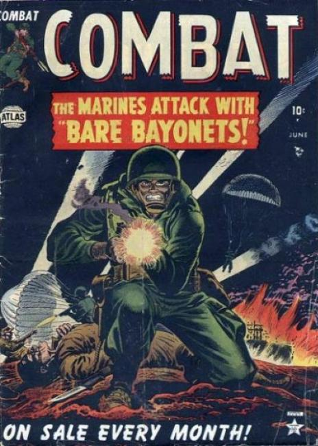

Combat

Series: on-going
Publisher: 1952 Atlas (Marvel)
Cover: Russ Heath
A collection of WWII short stories.
Issue #1
- "The Glory of an Infantryman" (script by Hank Chapman, art by Joe Maneely)
- "Four Men" (script by Chapman, art by Paul Reinman)
- "Bare Bayonets" (art by Mac Pakula)
- "Hit the Silk" (script by Chapman)
- "To the Death." a two-page text story.